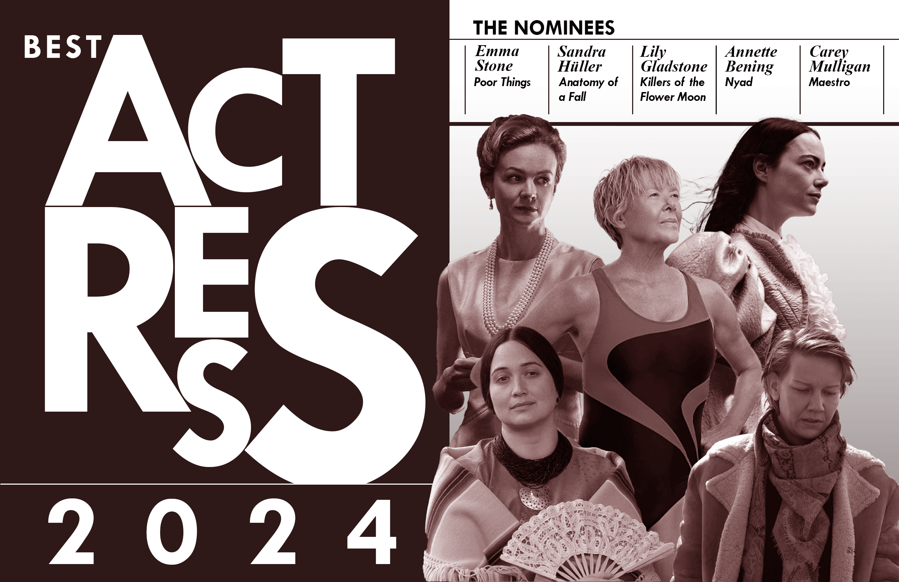

Here is a 2D illustration I did in my design fundamentals class in 2023. Keeping the content of the book in mind I decided to use an old english font for the text on the front and back cover along with a serif font for the bodycopy. The back of the book design also features a portion of text that is found on every copy of Macbeth. For the main design on the front cover I made an abstract 2D illustration of a bloody rapier and a crown, to symbolize the duel that takes place in the story. I used Adobe Illustrator and Photoshop for this project.
Jazz Album Cover - 2024
This is a cover I designed for my coneptual image class in 2024. For this project were we each assigned a name for our cover. Mine was "On Purpose". We also took photos of each other and the professor (the hands in the photo) for our covers. With all this in mind I used a blue duotone color palette and zoomed in on the hands and keyboard in the design. I used other blue note jazz covers as inspiration for my design. I used only Adobe Photoshop for this design.
Fake Coffee Shop Menu - 2023
Here is another 2D mockup I created in my design fundamentals class in 2023. I designed the logo and menu from a coneptual coffee shop name which was "Coffee Dog". I used Adobe Photoshop to create the menu and Illustrator to make the logo.
Japanese Baseball Instagram Mockup Design - 2024
This is an instagram mockup I designed in 2024 for my theories and practice in graphic design course. It is an advertisement poster for the World Baseball Classic series specifically featuring the Japanese Team's players. The objective for this project was to persaude a culturally specific audience through design. I used only Adobe Photoshop for this design.
Sci Fi Movie Poster - 2024
Here is a movie poster I designed for my conceptual image class in 2024. For this project I was given the task to develop a movie poster using character montage. I wanted to design a Sci Fi horror movie poster for this assignment and took heavy inspiration from vintage versions "Alien" movie poster. I used only Adobe photoshop for this design.

Oscars Best Actress Magazine Spread - 2024
This was one of my favorite graphic design projects I have worked on. This is a magazine spread for a conceptual oscars magazine featuring the best actress nominees for the 2024 academy awards ceremony. For the first page I designed a graphic using blown up typegraphy, juxtaposing the individual letters next to each other while trying to maintain legibility. On the right page I have a photo montage of the five oscar nominees for best actress with their names also present above them. I only used photoshop for this design.
Rush Typography Poster - 2023
Here is a design I did in 2023 for my Typography class. It is a poster for the movie "Rush" and features a typeface I designed for the title. It also features graphics such as an F1 race car reminiscent of the one used by the movie's main character Nikki Lauda. For this design I used Adobe Photoshop.
Social Design Project - 2024
Here is a design I did for my Theories and Practice in Graphic Design course in 2024. It was specifically for a socially active and persausive design advocating for reduction in beach pollution. It features graphics such as parody and imagery similar to the "JAWS" movie poster in an attempt to get the viewers attention by parodying a familar design. I used Adobe Photoshop and Illustrator for this mockup.
Paris Olympic Poster 1 - 2024
This is my design for a Bauhaus styled poster advertising the golf event of the 2024 Paris Olympics. I designed this poster in my conceptual image class. I used Adobe Photoshop and Illustrator for this design.
Paris Olympic Poster 2 - 2024
This is my design for a Bauhaus styled poster advertising the archery event of the 2024 Paris Olympics. I used red white and blue colors to symbolize the French flag. I designed this poster in my conceptual image class. I used Adobe Photoshop and Illustrator for this design. I used Adobe Photoshop and Illustrator for this design.
Paris Olympic Poster 3 - 2024
This was my main design for a Bauhaus styled poster advertising the 2024 Paris Olympics. I designed this poster in my conceptual image class. I used Adobe Photoshop and Illustrator for this design. I used Adobe Photoshop and Illustrator for this design.